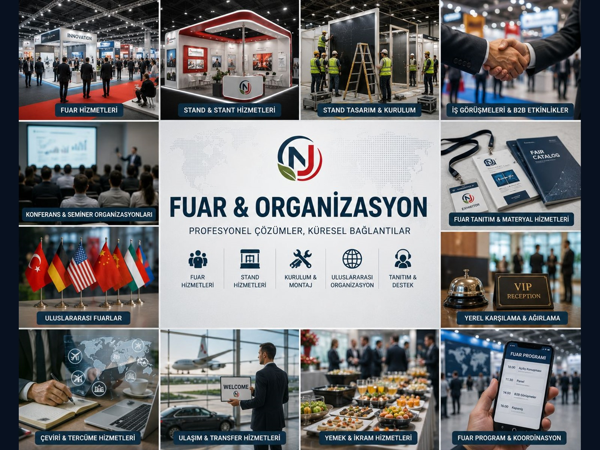

Yüksek kaliteli rejenere kauçuk
Kontrollü devulkanizasyon, rafinasyon ve kalite testleri ile lastik ve kauçuk üreticileri için daha tutarlı hammadde alternatifi geliştirme hedefi.
rejenere kauçuktire-grade target
NJGROUP, atık lastiklerden elde edilen kauçuk tozunu ileri karbondioksit destekli devulkanizasyon teknolojisiyle yüksek kaliteli rejenere kauçuğa dönüştürmeyi hedefleyen döngüsel kauçuk teknolojileri platformudur.
NJGROUP için temel değer; atık lastik yönetimini, lastik fabrikaları ve yüksek standartlı kauçuk ürünleri için sanayi hammaddesi geliştirme fırsatına dönüştürmektir.
Kontrollü devulkanizasyon, rafinasyon ve kalite testleri ile lastik ve kauçuk üreticileri için daha tutarlı hammadde alternatifi geliştirme hedefi.
Kauçuğun çapraz bağ yapısını hedefleyen, proses parametreleri gizli tutulan ve yüksek katma değerli geri kazanıma odaklanan mühendislik modeli.
Belgelendirme iddiası yerine; izlenebilirlik, laboratuvar kalite kontrolü, çevresel uyum ve EU-standard oriented quality control yaklaşımı.
Bu akış temel prensibi gösterir; sıcaklık, basınç, reçete, katalizör oranı ve proses parametreleri ticari sır olarak paylaşılmaz.
| Seviye | Teknik Tanım | Katma Değer | Hedef Uygulama |
|---|---|---|---|
| Kauçuk Tozu | Fiziksel kırma ürünü; kauçuk çoğunlukla toz seviyesinde kalır. | Düşük katma değer. | Sınırlı uygulama alanı. |
| Rejenere Kauçuk | Devulkanizasyon süreci sonrası kauçuk formülasyonlarına tekrar katılabilir. | Daha yüksek katma değer. | Kauçuk ürünleri ve endüstriyel parçalar. |
| Lastik Kalitesinde Rejenere Kauçuk | Kontrollü proses, gelişmiş kalite testleri ve reçete optimizasyonu. | En yüksek hedef seviye. | Lastik fabrikaları ve yüksek standartlı kauçuk ürünleri için hedef kalite. |
Hedef müşteri kitlesi; lastik fabrikaları, kauçuk parça üreticileri, kauçuk hamur hazırlama tesisleri ve rejenere kauçuk satın alan endüstriyel yapılardır.
Proje geliştirme, tedarik zinciri, ekipman seçimi, kalite sistemi ve pazar bağlantısı birlikte ele alınır.
Atık lastiklerin yüksek katma değerli sanayi hammaddesine dönüşmesi; karbon ayak izi azaltımına, yerel üretime ve yeşil sanayi dönüşümüne katkı sağlar.
Lastik fabrikaları, kauçuk ürünleri üreticileri, otomotiv kauçuk parça üreticileri ve kauçuk zemin kaplama üreticileri.
Kauçuk tozu tedarikçileri, ekipman üreticileri, proje geliştirmek isteyen yatırımcılar ve mühendislik ortakları.
Belediyeler, çevre kurumları, organize sanayi bölgeleri, ESG fonları ve yeşil sanayi dönüşümü programları.
Numune, teknik görüşme, kauçuk tozu tedariki, tesis yatırımı veya kamu/ESG iş birliği için NJGROUP ile iletişime geçebilirsiniz.
Türkiye merkezli döngüsel kauçuk teknolojileri ve endüstriyel proje geliştirme platformu.
Rejenere kauçuk ana odağımızın yanında, NJGROUP Türkiye pazarına uygun endüstriyel ürünler, gıda makineleri, fuar hizmetleri ve yeni marka iş birliklerini aynı ticari platformda büyütür.
 Trade / Food Machinery
Gıda Makinaları
Endüstriyel mutfak, sebze hazırlama, hamur ve makarna üretimi, vakum paketleme ve buharlı pişirme ekipmanları.
Trade / Food Machinery
Gıda Makinaları
Endüstriyel mutfak, sebze hazırlama, hamur ve makarna üretimi, vakum paketleme ve buharlı pişirme ekipmanları.

Services / Exhibition Fuar ve Organizasyon Hizmetleri Çinli üreticiler ve uluslararası markalar için Türkiye fuar katılımı, stand, tanıtım, B2B görüşme ve yerel operasyon desteği.